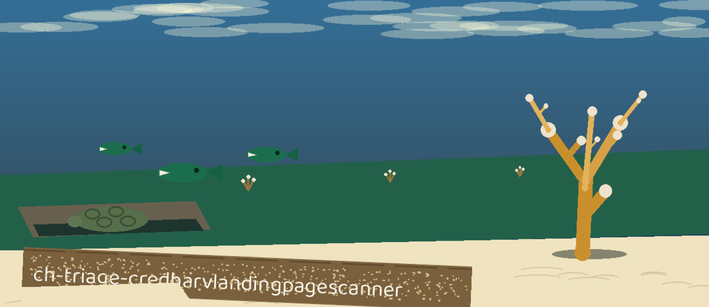

The Gangway Desk. A command line tool that fetches one landing page, reads the HTML exactly as delivered, and reports the login forms whose submission endpoint looks wrong: the ones addressed somewhere other than the page's own origin.
The presented ticket read up close; the striped one is already laid apart.
InputOne user supplied URL, fetched over http or https only, with a ten second timeout
OutputA report of the login forms that post off the page's own origin or to a non-web scheme
Dependenciesrequests 2.31.0 or later and beautifulsoup4 4.12.0 or later
Fetch failureAn invalid URL or a failed fetch exits 1
Usage
python3 main.py URL [-v] [-o OUTPUT]
The URL is a required positional argument. The README's own usage line names no URL argument, although the address is the tool's whole input.
Option
What it does
URL
The landing page to fetch and read (required). Only that one page is fetched; nothing is crawled.
-v
Verbose output. The README lists the flag with no description provided.
-o
Names the output file. The README lists the flag with no description provided.
-h
Show help message and exit.

Each presented paper read once; the one addressed somewhere else is laid apart.
Stated limits
The scan sees only the static markup as delivered. A page that builds its login form with JavaScript shows no form at all, and its clean answer means nothing was in the delivered text.
An input with no name attribute is dropped from the record entirely, including a password field, so a form whose password box is named only by id is never counted as a login form.
Login form detection needs a named username-like field: the field name is tested by substring for username, email, or user, alongside a password type input. The obvious field name login matches none of the three and is missed.
A form is flagged when its action uses a non-web scheme, or a host whose raw netloc string differs from the page's own, port and case included. A form posting to the organisation's own sign in subdomain is flagged the same as one posting to a stranger.
Nothing is crawled: one page is fetched, and only that page is read.